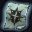
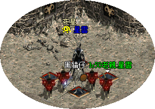
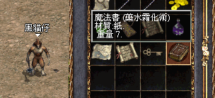
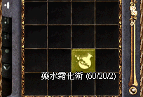

|
2002年8月21日
韓國測試伺服器更新 - 幻想系列裝備
來源：Nue's Lineage
韓國測試伺服器在8月21日更新了以下內容：
1. 幻想系列裝備：象牙塔前將會有NPC販售幻想道具系列，幻想系列中的"武器"和"防具"，如要加強其能力，需使用"幻想的對武器施法的卷軸"以及"幻想的對盔甲器施法的卷軸"，但須注意的是幻想道具系列是有時效的，只要時效一到就會自動消失，所以才叫幻想系列 ^ ^"
2. 王族使用魔法頭盔的Bug修正，現在能正常顯示出魔法嚕！
Nue: 之前由於統馭魔法在3級的魔法欄，所以魔法頭盔中如有3級的魔法，將會無法使用，而4級以上的魔法會無法顯示，因此王族的魔法欄擴充至7級，以解決此問題 ^ ^
3. 未知....等待LC翻譯 @@a
4. 話島地圖Bug修正
|
幻想的對武器施法的卷軸(Fantasy Scroll of Enchant Weapon)
價格：100 |
|  |
幻想的對盔甲施法的卷軸(Fantasy Scroll of Enchant Armor)
價格：100 |
|
幻想之弓(Fantasy Bow)
攻擊力3/3 雙手武器 全職 材質:木 重量:40
價格：300 |
|
幻想之劍(Fantasy Sword)
攻擊力10/10 全職 材質:鐵 重量:40
價格：300 |
|
幻想盔甲(Fantasy Armor)
防禦力:7 全職 材質:鐵 重量:300
價格：300 |
考你眼光！誰是PvP王四連環競猜大賽第二天報告
以下內容截至2002年8月21日中午12:00：
各PvP參賽者人氣指數：
| 王族 |
人氣指數 |
妖精 |
人氣指數 |
騎士 |
人氣指數 |
法師 |
人氣指數 |
| 1. PT1 |
8% |
5. 諸星 |
14% |
9. 燄影 |
18% |
13. 靈羊 |
21% |
| 2. 藍燄 |
47% |
6. 登圖貝勒 |
18% |
10. Tataka |
8% |
14. TheGod |
13% |
| 3. 月之宿命 |
44% |
7. Kissmehk |
13% |
11. 疾風之邊 |
67% |
15. Drake |
60% |
| 4. 小小的王子 |
0.4% |
8. 三井壽14號 |
56% |
12. HKlwc99 |
7% |
16. 魔之使徒 |
6% |
以下為目前已經參加了的玩家名單：（截至2002年8月22日中午12:00，共239人）
血霸
CTN
小野申二
樂星
傻豬豬娜娜
大地之劍
黑虎刃
LARSON
Jackyman
ElfArcher
Szesze33
Szesze
阿遊
天一雄太
艾仔仔
X龍騎士X
紅孩兒
StarSea
冰川藍
卡斯
魔界銀騎士
S珊S
鬼峰
奪愛
雷炎騎士
拉迪比
2打6妖精
Nobody
血之劍神
雄霸劍客
CuteCutes |
神皇天子
CrAzYwOmEn
炎之勇士
大隻老阿頭
TeRs
To9
狂邪亞心
謝夫
風之吹雪
地武神
淚風
Elernal
金金騎
周亞夫
Libra
五島小馬
易天行
CK女
紫凌雲
火之獵人
高路斯
亞伯法師
一墮落天使一
嘉美由
蒼燕
終結者JOKER
死太郎
H佬
金法師
Chamyto
怒傑 |
重生一皮皮
熱血小騎
青娃
阿冬囉
九龍小子
傻瓜雨夜
傻瓜妖精
超級騎士仁
我係豪豪
迷途妖精
吸寶神騎
勝利之光
一冬日一
億仔
Arrest
雅樂ADA
Oo陳慧琳oO
天龍魔術師
DARK仔
影之嵐
張德仔
StormMax
Independent
乂卡比乂
路人夾
阿魯巴斯
卡斯守護神
傑特
希達
最強的傳說
沉默的啊橋 |
受罰法師
魔月影
泰利嘉
魔法組織會長
0003
芽菜仔
海若鷹
海之力量
人類妖精
WhyHenry
Giba
X一人一X
小佑
卡頓買水專用
一小敏敏一
戀之小詩
電蟲仔
疾風使徒
GAVIN先生
風神之Henhen
TheGod
DayLight
逍遙隱士
也媽嗲
對
辛酸法師
小笨瞬
II巴特尼亞II
關二哥
肥騎士
紅蓮魔法師 |
殺破浪
Akitos
魔術仕
天際藍
Fatty
Angelet
惡魔魔法師
冰火神妖
田伯光25仔
0o呂布o0
碎夢
阿蟹騎士
芝諾詩萊
天堂大使
Oo婷婷oO
魔鬼筋肉人
暗黑剎
強仔無敵
SINGOBLOOD
星光小生生
智障王子
烏璐
明年今日
狂虎丸
風魔太郎
Oo蛇仔oo
Muryans
Lindsay
裁判官
LineageSky
古里斯 |
月狐
串騎
唐糖
Save
赤炎騎士
召喚kit
妖精波特
傻小曼
布拉伯
苦澀的雲呢拿
赤炎小法師
寧爺
雷鳴劍
魔幻師
3310
嵐影
淚雲
Angel123
楊過007
終極冰河仔
豬西火雞批
NakagodIII
冰絲絲
LawfulKing
香蕉王
劍天聖
VRFknight
帝皇Arthur
妖精莎莎
Lulu0l
卡凱爾 |
妳
StarrySky
唔知邊個
無相天魔
瞬燄
龍中影
0o風精靈o0
暗雲龍
MiniDisc
卡碧
吹雪蝦餅
笨人IIII
夜無影
虎虎再生
斷魔之帝騎
黑暗風暴
清烽仔
冰淩
朱大腸
O雪O
驢
魔法師夏候儀
奇岩
激凸騎士
邪惡騎士
克拉特
浩雲
奪命包皮
0o努力騎士o0
Ss莎莉斯sS
生命之泉 |
DKS
Octagon
黑牛王
BoBoLover
新佐治貝斯
黑乂卡特乂暗
峰仔妖精
TWINS大孖
森林守護神
神聖風
Oo英雄oO
Lilin
雷涅歐
雲劍師
幸運是我
妖精劍士
孤兒魔女
努力魔法師
一一風雲一一
DT80
膠布
一典韋一 |
香港愛神再出等級50角色！

鳴謝玩家黑貓仔提供資料及圖片，香港愛神伺服器在8月18日又出現等級50的角色了！他便是星雲了！恭喜恭喜！

另外，在8月18日的晚上巨蟻女皇亦跌下了藥水霜化術！
Snowcraft與Lineage Snowball的關係
鳴謝玩家冇名小子2(DontLoveMe)提供以下消息！
SnowCraft的確實資料，我都找到。SnowCraft在Hyper PC Player 第75期 CD-ROM Version附送，出版日期為2001年1月，比線上遊戲帝國還要早，SnowCraft完結時有句Happy Holiday IconMedialab。
IconMedialab是全球數位經濟首屈一指的商業價值創造商，通過使用者相關的先進科技，配合其豐富的本地市場知識及全球經驗，為客戶提供創新的商務解決方案。IconMedialab的業務網絡遍佈全球，在歐洲、美國及亞太區19個國家設立34個辦事處。自1996年在歐洲開展業務以來，為各類型的國際知名廠商進行了超過4,000個專案。
http://www.presconi.com/chinese/collaboration/partner.htm
Presco網頁中，Presco加入了IconMedialab國際聯盟，而Gamania遊戲橘子數位科技股份有限公司是Presco的能量夥伴。
因此可見Snowcraft遊戲的原著權應該由IconMediaLab所有，而其後IconMediaLab將其雪球遊戲重新包裝供應給Gamania（即是現在的Lineage Snowball），因此Gamania是在得到授權下才推出有關Mini-Game，Snowcraft和Lineage Snowball的
都是由同一間公司製作，因此並不存在抄襲問題，正如本網之前所言"Lineage Snowball的設計者才會知道"，現在終於真相大白的！
香港伺服器8月20日大斷線的補償
香港伺服器在8月20日約17:10大斷線（幸好每次大斷線網主都沒有上線或正在掛網 =.=），經香港官方查明後證實為其對外互聯網供應商PowerNet Internet Group連往HKIX的光纖線路故障所造成，有關掉下道具或經驗值的補償細節請參考香港天堂官方網站的公告。 |